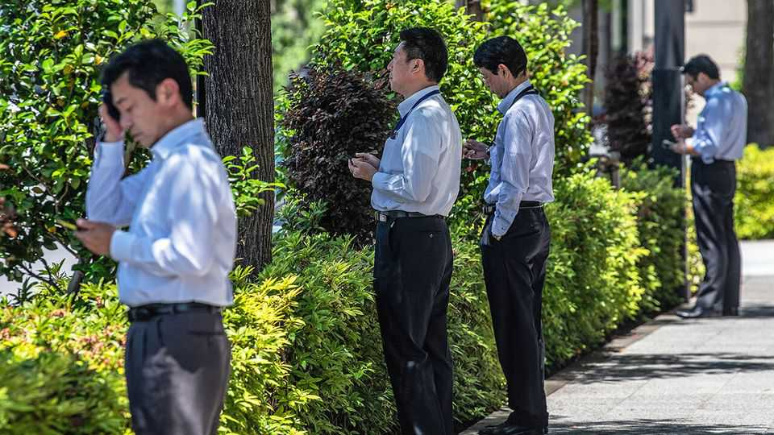
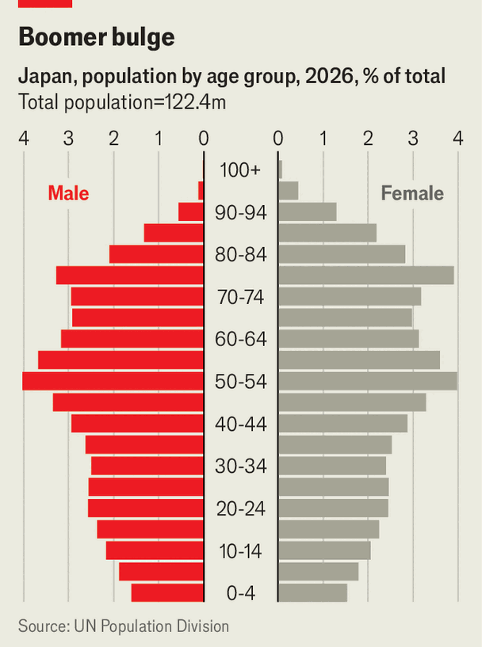

Japan’s Gen X workers are struggling
The “ice-age” generation has been cursed several times over

Aug 20th 2026
FOR NEARLY two decades Torigoe Atsushi, who is 50, has worked in the stockrooms of a fashion firm in Tokyo. His income rose only modestly, and it recently fell after his employer cut bonuses and reworked its pay scheme; he now earns about ¥3.6m ($22,600) a year. Then he spotted the firm’s recruitment ads, offering newcomers higher salaries. “It’s great that younger people are getting better pay,” he says. “But why not raise mine?”
Mr Torigoe belongs to Japan’s “ice-age” generation: workers who entered the labour market between 1993 and 2004, after the country’s economic bubble burst and many companies stopped hiring. The ice-agers often endured years of insecure work and low pay. Now in their 40s and 50s (thus Generation X), they are losing out again. Japan is emerging from decades of deflation, prices are rising and companies are handing out their biggest pay increases in a generation. But the ice-agers are not benefiting. Worse may come when this cohort of baby-boomers’ children—the last bulge in Japan’s population pyramid (see chart)—drifts into retirement.

The ice-agers’ fortunes contrast starkly with those of the generation that came just before. During the bubble years of the 1980s, companies hired voraciously. College students found their mailboxes stuffed with offer letters, or were treated to fancy meals by employers keen to woo them. Everything changed as the bubble popped in the early 1990s. Japan’s rigid employment system made it hard for firms to shed existing workers, so they cut hiring instead. The ratio of job openings to college applicants fell from nearly three at its peak to below one by 2000. Nagai Toshihisa, who graduated in 1999, shortly after the Asian financial crisis, abandoned his hope of working for a securities firm. “It felt utterly stupid looking for jobs,” he recalls. Many in his generation sent out dozens, even hundreds, of applications, to no avail. It did not help that the ice-age cohort was such a big one, adding to the oversupply.
Many graduates who failed to secure regular jobs ended up in temporary or contract work. Japan’s labour market sharply distinguishes between regular workers, who enjoy strong legal protections and seniority-based pay rises, and irregular ones, who often do similar work for much less money and are the first to be laid off in downturns. Such jobs often used to be filled by housewives supplementing their husbands’ salaries. Increasingly, they were taken by young people who needed to support themselves, says Kondo Ayako of the University of Tokyo. The term “freeters”—youngsters drifting between casual jobs—became popular, as did “parasite singles”, who lived off their parents well into adulthood. There was also growing concern about hikikomori, social recluses.
Time and acute labour shortages have repaired some of the damage. The share of ice-agers in regular employment has largely caught up with that of older cohorts, says Shimoda Yusuke of the Japan Research Institute. But their earnings have not. Those who spent long stretches in irregular work tend not to fully catch up even after switching to the regular track. Those in regular jobs faced another problem: the upper ranks of their companies were crowded with the bubble-era workers, delaying promotions for those who followed. Japan’s low labour mobility has meant the unlucky cohort cannot easily seek better pay elsewhere.
Japan’s economy is changing. After three decades of stagnation, wages are rising as inflation returns, and job-hopping is becoming more common. Yet these improvements are mostly benefiting the young. Companies short of labour are competing fiercely for fresh blood, and paying more to attract and retain it. Middle-aged employees are much less likely to switch jobs, giving firms little incentive to raise their wages. According to Kumano Hideo, an economist at Dai-ichi Life Research Institute, nominal wages for college-educated workers in their 20s and 30s were 10-16% higher in 2025 than five years earlier. Meanwhile, those in their early 50s suffered a nominal decline of 1.3%. Abe Katsuya, 48, says the large pay rises dished out to the young give him “mixed feelings”. He is part of the “Mammoth Club”, a support group for ice-agers who identify with the woolly beasts that endured harsh times.
All this has left the ice-agers with low lifetime earnings (and therefore little in the way of savings). That points to a looming crisis as they reach old age. Japan’s pension system ties payouts to lifetime earnings, so decades of suppressed pay will translate into low pensions. “Those who happened to come of age in a downturn are likely to carry that handicap for the rest of their lives,” laments Mr Kumano. Getting them to work longer, as a growing number of old people already do, is one fix but it will not solve everything. Ms Kondo warns that many may end up on welfare, which is not designed to support the elderly over extended periods. That would be costly; for instance, the state pays welfare recipients’ medical bills in full. And because the generations behind the ice-agers are smaller, fewer workers will have to support more pensioners.
The woes of the ice-age generation have long had the government’s attention. For decades, authorities have come up with programmes to help them find jobs and nudge reclusive ones to connect with the outside world. Yet as the ice-agers grow older they face new problems. Beyond thin pensions and savings, questions loom, for instance, over housing; compared with older Japanese, this cohort is less likely to own homes, and Japan’s rental market is unfriendly towards older tenants. The government is belatedly adjusting: in April, it produced a three-year plan for the ice-agers, spanning measures from asset-building to housing. But a lot more serious thinking will be needed. ■
For exclusive coverage of Asian politics, economics and security, sign up to Asia Bulletin, our weekly subscriber-only newsletter.